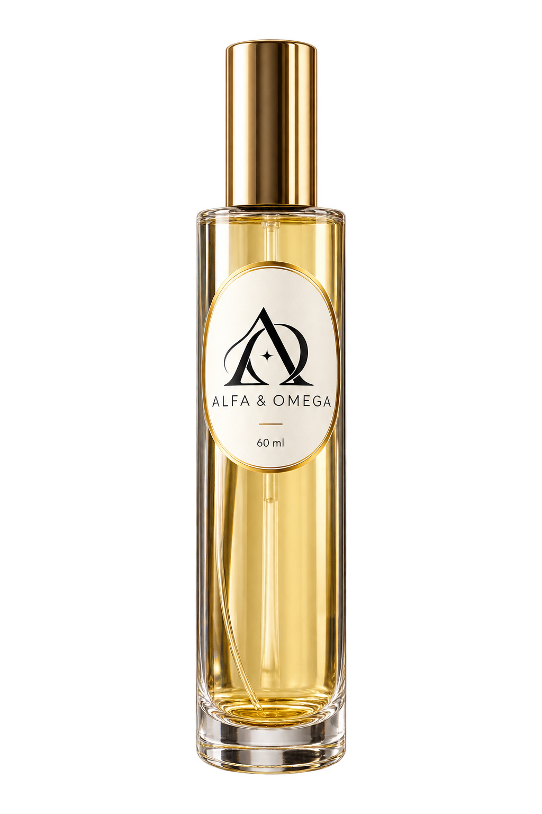
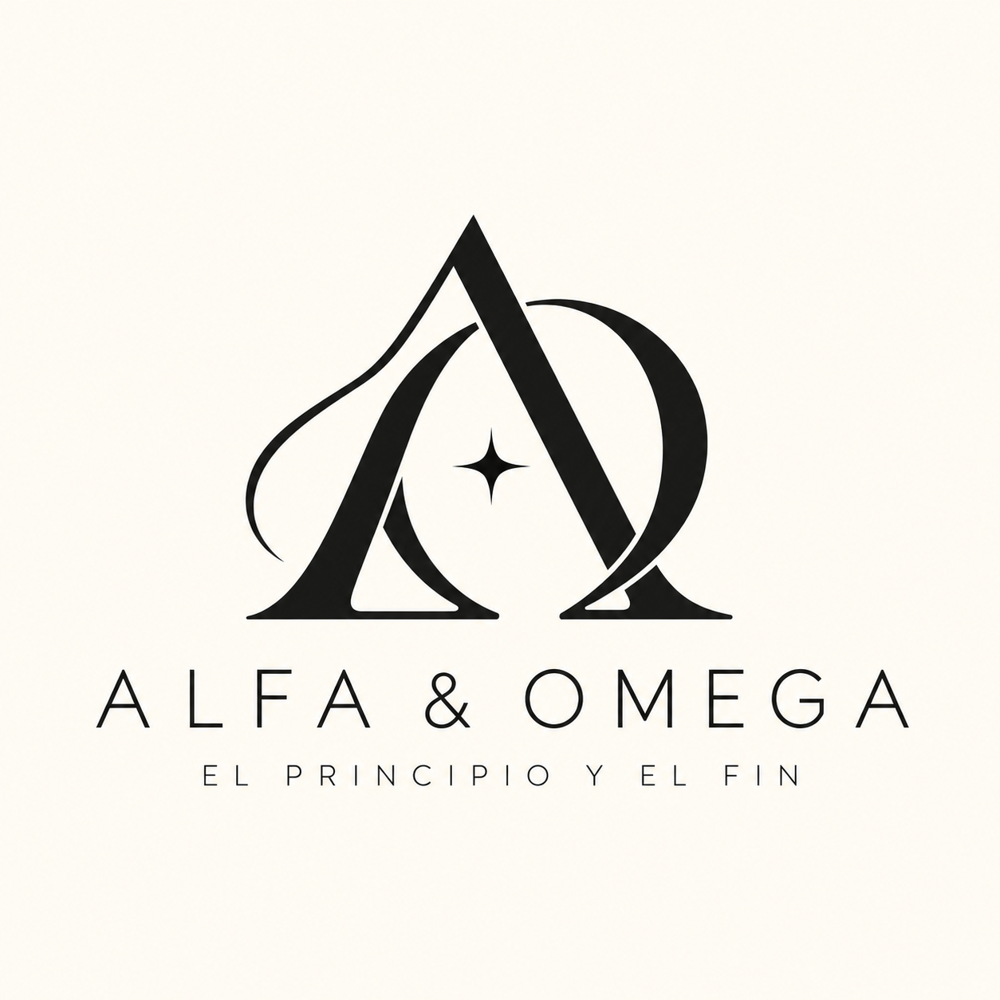

Explora
Encuentra una referencia que conozcas o descubre nuevas posibilidades entre nuestros diseñadores.
Hay aromas que te acompañan.
Otros se convierten en parte de ti.

Una colección para descubrir, explorar y recordar.
Encuentra tu próxima fragancia de inspiración.
Prueba con otro nombre o diseñador.
Colección de fragancias de inspiración · Presentación de 60 ml. Consulta disponibilidad. El frasco con la identidad Alfa & Omega es una representación visual de la presentación.

Α, alfa. Ω, omega. La primera y la última letra del alfabeto griego. Nuestra identidad nace de una convicción personal de fe y de una idea: lo que importa deja huella.
Seleccionamos fragancias de inspiración para acompañar tus días, tus encuentros y tus nuevos comienzos.
ALFA & OMEGA APOCALIPSIS 22:13Encuentra una referencia que conozcas o descubre nuevas posibilidades entre nuestros diseñadores.
Abre cada referencia y conoce su diseñador de inspiración y su categoría. Descubre opciones para cada momento.
Deja que tu gusto te guíe. Una referencia conocida puede ser el comienzo de una nueva colección personal.
Son perfumes de inspiración comercializados bajo Alfa & Omega. Las referencias de diseñador ayudan a identificar la inspiración olfativa y pertenecen a sus respectivos titulares. No existe afiliación con esas marcas.
La presentación de esta colección es de 60 ml. El frasco conserva la silueta cilíndrica, tapa dorada y etiqueta ovalada de la presentación de referencia. La identidad Alfa & Omega se muestra como propuesta visual.
La duración depende de la fragancia, la piel, el clima y la aplicación. No prometemos un porcentaje de similitud ni una duración universal.
Busca por nombre o diseñador, elige una categoría y abre las fichas para conocer cada referencia. Este espacio presenta nuestra colección de fragancias de inspiración.